Arts et Métiers
Programme Grande École en double diplôme. Spécialisation de troisième année en ingénierie, conduite et contrôle des systèmes nucléaires.
Élève-ingénieur en dernière année du double diplôme Arts et Métiers–UNCuyo, orienté vers l’ingénierie des systèmes nucléaires. J’applique la modélisation, la commande, l’optimisation industrielle et des méthodes techniques rigoureuses à des problématiques d’ingénierie complexes.
À la recherche d’un stage de fin d’études de 6 mois · Disponible dès février 2027

Mon parcours académique et pratique couvre les études énergétiques à orientation nucléaire, l’électronique de puissance, la modélisation statistique, la simulation industrielle, la fabrication et la planification de projets. Je souhaite contribuer à des opérations techniques et à des projets d’ingénierie dans l’industrie nucléaire.
Expérience pratique d’ingénierie, communication technique et responsabilités financières et logistiques.
Énergies renouvelables | Systèmes photovoltaïques | Méthodes industrielles
Contribution à l’amélioration des opérations d’installation photovoltaïque chez Energiu, une PME spécialisée dans les énergies renouvelables, en combinant expérience terrain, standardisation des processus, méthodes Lean, documentation technique et pilotage stratégique de la performance.
Mon travail visait à rendre les activités terrain plus structurées, reproductibles, efficaces et faciles à exécuter, tout en soutenant la mise en place d’un pilotage commercial fondé sur des indicateurs de performance.
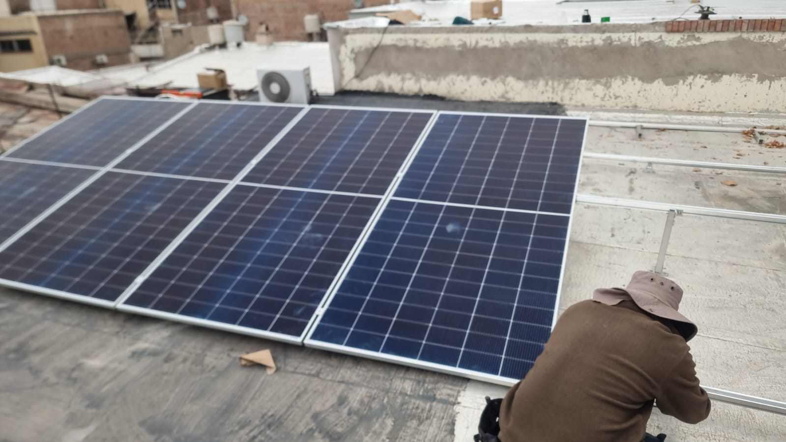
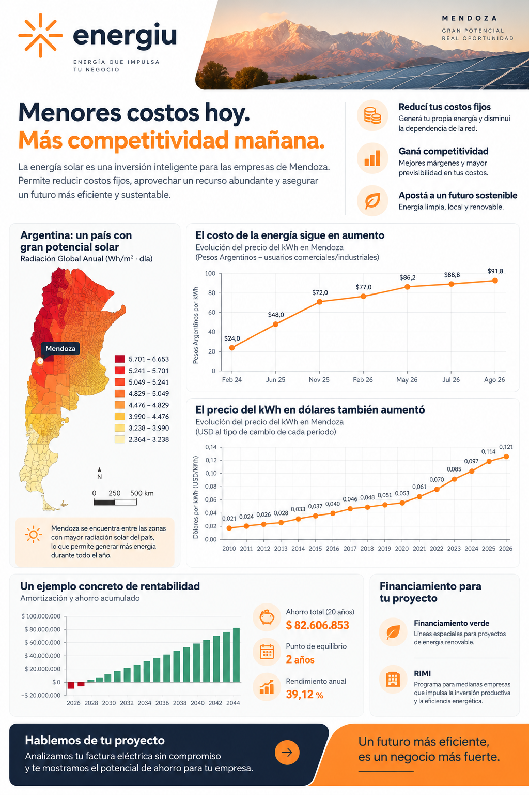
Appui aux enseignants lors des travaux pratiques sur les équipements et installations industriels. Accompagnement des étudiants dans la compréhension des principes techniques et de leurs applications. Contribution à l’explication des codes ASME et à la transmission claire et structurée de contenus techniques complexes.
Membre de l’équipe de direction d’un centre éducatif associatif, responsable de la gestion financière et de la logistique des événements. Gestion d’un budget annuel d’environ 70 000 €, comprenant planification financière, suivi des dépenses et paiements. Recherche de sponsors et de dons, et coordination logistique d’événements nationaux réunissant plus de 150 participants.
Les projets sont présentés selon leur pertinence pour l’ingénierie énergétique et nucléaire : systèmes électriques, analyses techniques, optimisation, opérations industrielles et fabrication. Les rapports reflètent des travaux collectifs, sauf mention contraire.
Systèmes électriques, valorisation thermique et génie des procédés énergétiques
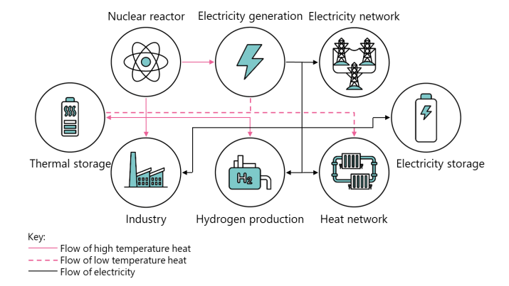
Analyse thermodynamique des possibilités de récupération de chaleur résiduelle des systèmes nucléaires, avec prise en compte de la valorisation énergétique, du potentiel économique et des enjeux de sûreté.
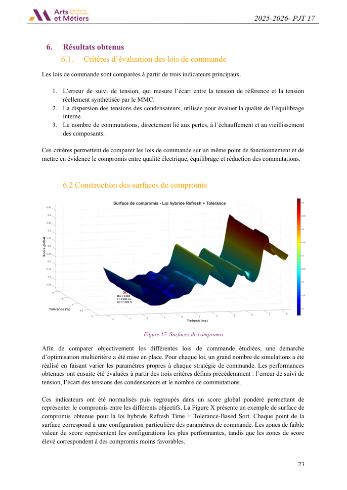
Modélisation et évaluation de stratégies de commande classiques, hybrides et optimisées, notamment par recuit simulé et algorithmes génétiques.
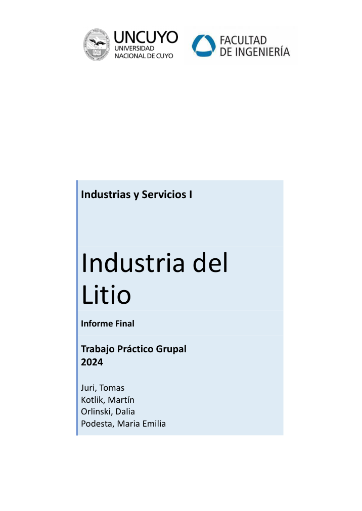
Étude industrielle collective de 55 pages sur la chaîne de valeur du lithium, les procédés d’extraction, les équipements, les applications et les impacts environnementaux.
Modélisation, incertitude, méthodes statistiques et aide à la décision quantitative
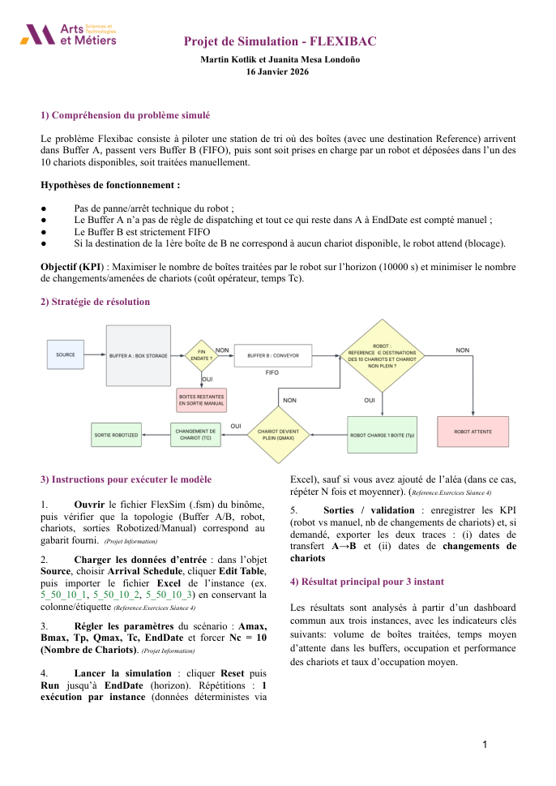
Modélisation d’un système logistique avec poste de tri robotisé et indicateurs de performance, en combinant analyse MATLAB et simulation FlexSim.
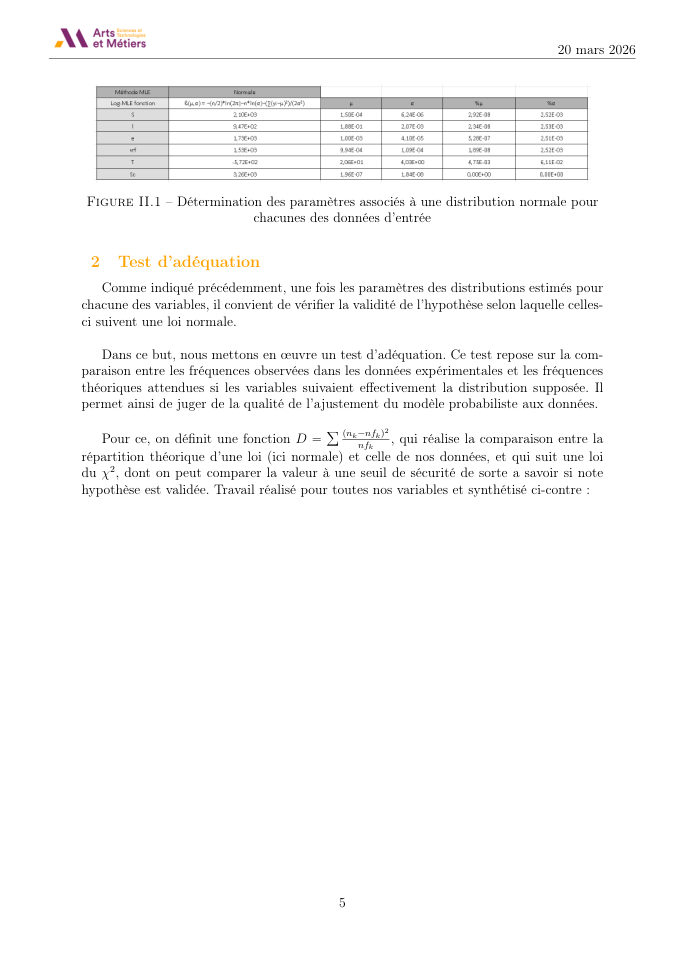
Estimation statistique, tests d’adéquation et d’indépendance, régression multiple et réduction de la variabilité.

Comparaison de quatre stratégies de production sur un cas simulé de 6 120 unités par an. Solver minimise le coût total sous contraintes d’effectifs, d’heures supplémentaires et de stocks.
Planification des activités, des ressources et des chaînes d’approvisionnement

Planification avec allocation de ressources, chemin critique, PERT, accélération et analyse des risques par Monte Carlo.
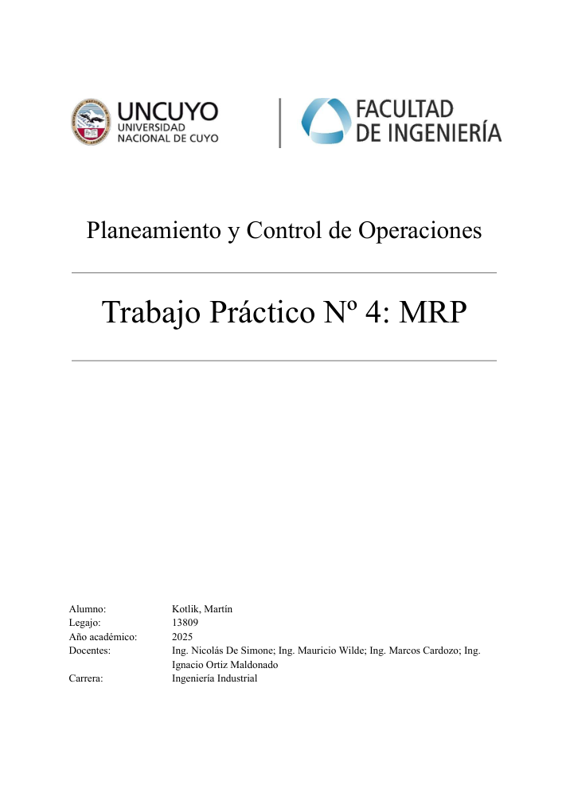
Nomenclatures, délais, stocks et ordres d’achat et de fabrication planifiés avec POM-QM.
Conception technique, maîtrise des procédés, fabrication et qualité
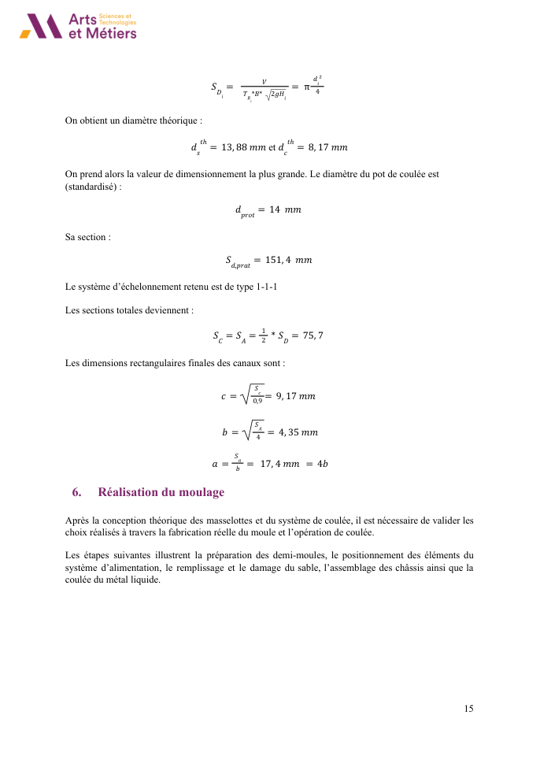
Surépaisseurs, dimensionnement des masselottes et du système d’alimentation, moulage, contrôle visuel et rendement matière.

Travaux pratiques de soudage par résistance, traction, métallographie, rivetage et forge.

Conception cinématique, comparaison des lois de mouvement sous Python, CAO CATIA et validation dynamique.

Participation à la CAO, à l’usinage, à l’assemblage et à la planification des tâches d’une équipe véhicule étudiant.
Innovation centrée sur les utilisateurs et travail d’équipe
Finaliste parmi les deux meilleurs projets de la catégorie Impact social et environnemental du Bootcamp Trama (ITBA). Développement d’un concept de pictogrammes sur montre connectée, présenté devant des investisseurs.
Espagnol — langue maternelle
Français — C1
Anglais — C1 · TOEIC 965/990
Programme Grande École en double diplôme. Spécialisation de troisième année en ingénierie, conduite et contrôle des systèmes nucléaires.
Génie industriel · Moyenne 8,44/10
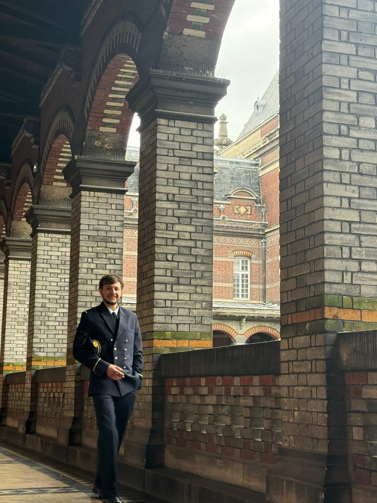
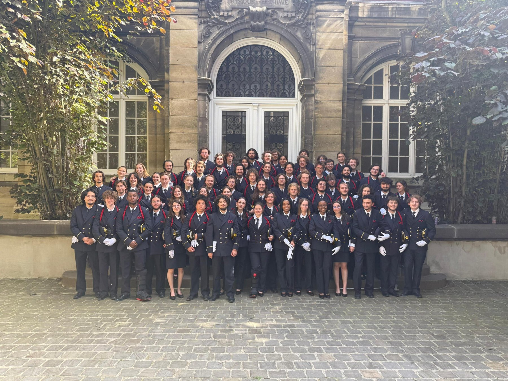

Compréhension orale 495/495 · Écrite 470/495 · C1
AZ-900 · Examen validé
Formation intermédiaire à avancée, 2024
Formation achevée en octobre 2024
Cambridge English: First · Mention B
Finaliste · Bootcamp Trama
Je recherche un stage de fin d’études de six mois à partir de février 2027 afin de contribuer à des projets techniques et industriels.
martinkotlik12@gmail.com